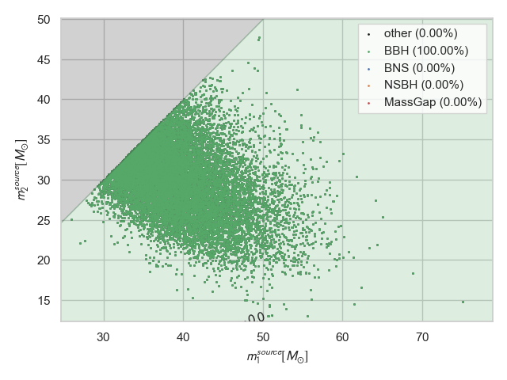
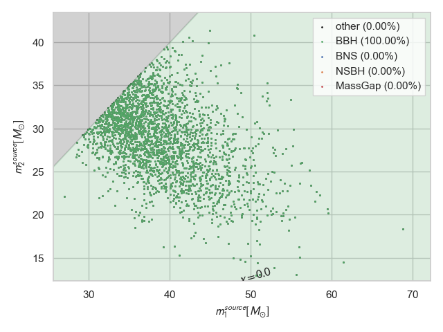
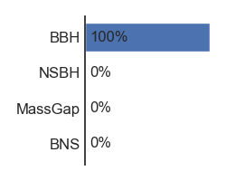

lalinference-reweighted
lalinference-reweighted
Navbar
home
Result Pages
bilby
lalinference-reweighted
Comparison
Corner
Config
1d Histograms
Custom
All
masses
chirp_mass
inverted_mass_ratio
mass_1
mass_2
mass_ratio
symmetric_mass_ratio
total_mass
source
chirp_mass_source
mass_1_source
mass_2_source
total_mass_source
remnant
inclination
cos_theta_jn
theta_jn
spins
a_1
a_2
spin_angles
cos_tilt_1
cos_tilt_2
tilt_1
tilt_2
tidal
location
comoving_distance
dec
luminosity_distance
ra
redshift
timings
SNR
calibration
energy
others
log_likelihood
Interactive
Interactive_Corner
Classification
Downloads
About
Search
lalinference-reweighted
Below we look at the source probabilities and plots for the passed result file
BNS
NSBH
BBH
MassGap
HasNS
HasRemnant
default prior
0.0
0.0
1.0
0.0
0.0
0.0
population prior
0.0
0.0
1.0
0.0
0.0
0.0
Command Line
Export to CSV
Export to JSON

Command Line
Caption
Command Line
Caption

Command Line
Caption

Command Line
Caption
This page was produced by charlie.hoy at 19:18 on August 26 2020